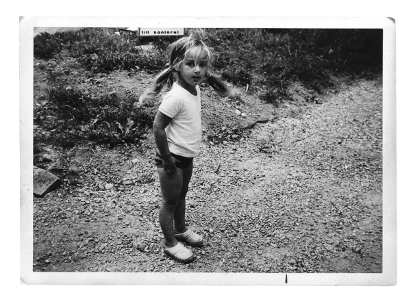

Biography
Joanna Rubin Dranger is an award-winning Swedish graphic novelist, writer and illustrator. She was the first female professor of illustration at Konstfack University of Arts, Crafts and Design 2007-2017. Her accolades include the Nordic Council's Literature Prize, Stora Svenska Illustrator Prize, PRISA!, the FIPRESCI Prize – the International Film Critics Awards, and the Swedish Academy of Comic Art's Adamson statuette.
Most recent works
2025: "The Art of being Free - A graphic short story about Hanna Hirsch Pauli", "Konsten att vara fri - en tecknad brevberättelse om Hanna Hirsch Pauli", Nationalmuseum, Sweden. (Exhibition opens June 19:th)
2025: "Swedish Jewish Heroines", Exhibition, Raoul Wallenbergs square, Stockholm. (May)
2022-2025 "The Family that disappeared" / "Familjen som försvann", exhibition on tour, The Living History Forum, Sweden.
2025 "Remember Us to Life", a graphic memoir, Ten Speed Press, Penguin Random House.
2025 "Recuérdanos para Vivir", Planeta Comics, Planeta de Libros.
2024 "Jewish Heroines" / "Židovské hrdinky", Czech Republic
2024 "Hidden Jewish Lifes" / "Dolda judiska liv", Albert Bonniers förlag.
2024 "Remember Us to Life" / "Ihukom os til livet", Coolt Publishers Denmark.
2024 "Jewish Heroines" / "Judiska hjältinnor", Natur & Kultur. Co-Authors: Anneli Rådestad, Karin Brygger.
2023 Comics Biennal "Resist - Exist: plural bodies, plural comics", Curitiba, Brazil.
2023 "Hidden Jewish Lifes" Paper presented, at the Conference "Contextualizing the Holocaust in the Nordic Countries", The Institute for Holocaust research in Sweden (IHRS) and The Norwegian Center for Holocaust and Minority Studies (HL-senteret).
2022 "Remember Us to Life" / "Ihågkom oss till liv", graphic novel, Albert Bonnier Publishers, Sweden.
2022 "Remember Us to Life" / "Husk oss til livet", graphic novel, Spartacus Publisher, Norway.
Selected Awards:
2023 Nordic Council Literature Prize for "Remember Us to Life"/ "Ihågkom oss till liv".
2023 The PRISA! Award, Association of Swedish illustrators and designers.
2022 Adamson statuette, the Swedish Academy of Comic Art.
2010 The Fipresci Award for the film "Miss Remarkable & her Career", the International Federation of Film Critics.
2010 Best short film for the film "Miss Remarkable & her Career", Nordic Panorama.
2001 Urhunden Prize for Best Swedish album, for the book "Miss Remarkable & her Career", The Swedish Comics Association.
2000 Stora Svenska Illustrator Prize, The association of Swedish illustrators and designers.
1989 First Prize in Libers Children´s books competition for the book "Angry!" / "ARG! Nittiotalets argaste bok".
Selected Exhibtions, Sweden:
2023-2026 "The Family that disappeared" / "Familjen som försvann", Exhibition on tour, Sweden.
2022-2025 "The Family that disappeared" / "Familjen som försvann", The Living History Forum / Forum för levande historia, Stockholm 2022-2023.
2014 "We have an important thing going on - The art of making change with image"/ "Vi har en viktig grej på gång - Konsten att förändra med bild", Grafikens Hus.
2013, 2010 and 2009 "To give form to a child" / "Att formge ett barn", Illustratörcentrum & Svenska Tecknare.
2011 "Super heroes and anti heroes in comics - from Superman to Miss Remarkable" / "Superhjältar och antihjältar i serier - från Stålmannen till Fröken Märkvärdig", The Jewish Museum / Judiska Museet, Stockholm.
2007 "Miss Remarkable at Sergelstorg" / "Fröken Märkvärdig på Sergelstorg", Kulturhuset, Stockholm.
For recent info see:Affiliated Professor of illustration, Konstfack, University College of Arts, Crafts and Design 2017 -
Professor of illustration, Konstfack, University College of Arts, Crafts and Design 2007-2017
Born in 1970. Educated at Konstfack, University College of Arts, Crafts and Design 1992-1995 and Nyckelviksskolan 1990-1992
2010-2011 The English version of the film "Miss Remarkable & her Career" screened at film festivals around the world. The film won several international prizes: Best Nordic Short Film at Nordic Panorama, Winner of the FIPRESCI Award Annecy (the International Federation of Film Critics), Audience Award Tricky Women Festival, Audience Award Uppsala International Festival, Audience Award for Best International Short, Cork Film Festival, Irland. Miss Remarkable´s struggle with her own demons, crushing parental expectations and a career meltdown. There is also a Swedish version with Vanna Rosenberg as Miss Remarkable (with Swedish, English or French subtitles) - and a Danish version with Sidse Babett Knudsen as Miss Remarkable.
See the Swedish film here.2011 The picture book as art – Joint Exhibition at Skellefteå Konsthall. Participants: Joanna Rubin Dranger, Tove Jansson, Pija Lindenbaum, Jockum Nordström, Poul Ströyer, Anna-Clara Tidholm etc. From June 12th, 2011.
2011 The Swedish comic magazine "Bild & Bubbla" prints an extensive picture supplement with sketches, drawings and texts by Joanna Rubin Dranger, June 2011.
2011 The film " Miss Remarkable & her Career " is shown at "Stockholms Jewish Film festival" / "Stockholms Judiska Filmfestival" May 7-10th 2011.
2011 "Superheroes och antiheroes in comics - from Superman to Miss Remarkable", exhibition at the Jewish Museum in Stockholm / Judiska Museet i Stockholm. From April 4th, 2011.
2011 Published in "Kolor Klimax - Nordic Comics Now", a Nordic anthology published by Fantagraphics & Finnish Comics Society. Editor Matthias Wivel. Participants except from Joanna Rubin Dranger: Joakim Pirinen, Joanna Hellgren, Emelie Östergren, Kolbeinn Karlsson, Jenni Rope etc.
2011 Ambassador with Özz Nujen and Jan Gradvall for "Berättarministeriet".
2010 "Nell på våren", children's book, Rabén & Sjögren.
2010 "Nell på hösten", children's book, Rabén & Sjögren.
2010 "Nell på vintern", children's book, Rabén & Sjögren.
2010 Release of the film "Miss Remarkable & her Career" / Premiär för filmen "Fröken Märkvärdig & Karriären"
2009 Tankar för dagen, Sveriges Radio / Swedish Radio (2009-09-04 & 2009-10-08 & 2009-10-15 & 2009-10-22 & 2009-10-29)
2009 "Räkna med Nell", children's book, Rabén & Sjögren.
2009 "Nell leker inne", children's book, Rabén & Sjögren.
2009 "Alltid redo att dö för mitt barn"/ "Always ready to die for my child", paperback, Albert Bonniers Förlag.
2008 "Always ready to die for my child", Aschehoug Publishers, Norway.
2008 "Mr Day Dreamer, The Dreamship" release in NY, USA, by Winged Chariot Press (supported by the Embassy of Sweden).
2008 "Alltid redo att dö för mitt barn"/ "Always ready to die for my child", Albert Bonniers Förlag, Sweden.
2008 "Miss Scardy-Cat at Sergels torg"/" Fröken Livrädd på Sergels torg" Exhibition at Kulturhuset.
2008 "What doesn´t kill you makes you stronger!", Arvinius Förlag. The book is available in both Swedish and English.
2007 "Mr Day Dreamer, The Dreamship", release in the United Kingdom by Winged Chariot Press, supported by the Embassy of Sweden.
2007 Professorship, GDI, Konstfack, University College of Arts, Crafts and Design.
2007 "Bye Bye Old Life! Ten Years of Illustrations." Exhibition at Galleri Pascal Cottard-Olsson, Humlegårdsgatan 15 Stockholm.
2007 "HAPPY!/ "GLAD!", childrens' book, Rabén & Sjögren. (Release May the 5:th!)
2007 Lecture at the Kolla!-seminar (4/5 at Rival, Stockholm).
2007 "Girlish Prank"/"Jentestrekker"/ "Flick-streck" - Group Exhibition at the Women's Museum, Norway.
2006 Ethnic/political comment in the publication" END"/"SLUT".
2006 Artcritisim in the artpublication "Paletten".
2006 Paperback "Cinderellas sister & Other Morality Tales"/ "Askungens syster & Andra Sedelärande Berättelser", Albert Bonniers Förlag, Sweden.
2006 "SAD. An Ordianry Tale. / "LEDSEN. En helt vanlig historia. With Anna-Karin Cullberg, Rabén & Sjögren. New design and updated illustrations!
2006 "Mr Day Dreamer, The Dreamship" / "Dag Drömlund och Drömfartyget", children's book with Anders Brundin, Rabén & Sjögren.
2006 Postcard in support for F!
2005 "Snow-White and the seven dwarf-women"/ "Snövit & de sju dvärgkvinnorna", 1200 signed posters.
2005 "Cinderellas sister & Other Morality Tales"/ "Askungens syster & Andra Sedelärande Berättelser", Albert Bonniers Förlag, Sweden and Aschehoug Publishers, Norway.
2004 Release in Japan, "Miss Remarkable & her Career", Wani Books.
2004 "Mr Day Dreamer, Daydreamer" / "Dag Drömlund, Dagdrömmare", children's book with Anders Brundin, Rabén & Sjögren.
2004 "ANGRY! The Angriest book in the 21:th Century" / "ARG! Tvåtusentalets argaste bok", with Anna-Karin Cullberg, Rabén & Sjögren. New design and updated illustrations!
2003 Manuscript, "Miss Remarkable & her Career", for the Swedish City Theatre.
2003 Release in the USA, "Miss Remarkable & her Career", Penguin.
2002 Illustrations, cover and graphic design for the children´s book " Johannabarnet" written by Victoria Hammar, Rabén & Sjögren.
2002 Summer talkshow in the program "Sommar" for Swedish Radio.
2002 "Dear Diary, by John Rupert Triangel" graphic short story published in the anthology "A naked man", Aschehoug Publishers, Norway.
2002 Represented in the artpublication "Presens".
2002 Teaching illustration, Beckmans School of Design.
2002 Design of christmas decorations, a cooperation for the poor and homeless with Stadsmissionen.
2002 Stamps," Miss Scardy-Cat & Love", the Swedish Post office.
2001 "Miss Remarkable & her Career", graphic novel, Albert Bonniers Publishers. (To Norwegian in 2001, Aschehoug Publishers)
2000 Exhibition, Museum of Work in Norrköping. Comics inspired by the book "Fittstim".
2001 Stamps, Valentines Day, The Swedish Post office.
2001 Teaching illustration, Beckmans School of Design.
1999 Workshop in storytelling, Konstfack, School of Fine Arts.
1999 "Miss Scardy-Cat & Love", graphic novel, Albert Bonniers Publishers (translated to Norwegian, Finish and German).
1999 Manuscript, a graphic short story, The Swedish Television 1999.
1999 Stamps, Portraits of Nobel Prize Winners, The Swedish Post office and the Belgium Post office.
1999 "Fittflickan", a feminist graphic short story published in Aftonbladet.
1992 "SAD, an ordinary story"/ LEDSEN! En helt vanlig historia, Co-author Anna-Karin Cullberg. Norstedts Publishers.
1989 "ANGRY!" The Angriest book of the Nineties /"Arg! Nittiotalets argaste bok", Co-author Anna-Karin Cullberg. First Prize in the Children´s book Competition, Liber Publishers.
Illustrations, covers and cartoons
Månadsjournalen, Dagens Nyheter, Svenska Dagbladet, BANG!, Publicistklubben, Arbetaren, Röda korset, Aftonbladets ledarsida, Femina, Naturskyddsföreningen, Judisk krönika, Gröna Konsum, Bonnier utbildning, Natur och Kultur, Rabén & Sjögren, AlfaBeta, Stockholms Stadsmission, Wahlström & Widstrand, Terrafem etc.
Prizes & Scholarships
2011 The Swedish Illustrator Organisation, Copy fund Scholarship / Fotokopieringsfonden, Svenska Tecknare.
2008 Albert Bonniers 100 year fund / Albert Bonniers 100:års minne.
2008 Swedish Authors´Copy fund Scholarship / Författarnas Fotokopieringsfond.
2008 Längmanska kulturfonden.
2006 The Swedish Illustrator Organisation, Copy fund Scholarship / Fotokopieringsfonden, Svenska Tecknare.
2004 The Swedish Arts Grants Committee Scholarship for two years/ Konstnärsnämndens tvååriga arbetsstipendium.
2003 The Stockholm City Art Scholarship / Stockholms Stads Konstnärsstipendium.
2003 Two Silver diplomas in the Competition "Kolla!" for the graphic novel "Miss Remarkable & her Career" and the" Miss Scardy-Cat & Love" stamps.
2002 The Swedish Illustrator Organisation, Copy fund Scholarship / Fotokopieringsfonden, Svenska Tecknare.
2002 "The Best Swedish Album 2002" / "Bästa svenska originalalbum 2002", Urhunden. Seriefrämjandet.
2002 "The Best Paperback Cover of the Year" 2002, The prize of the jury, Expressen, for the cover of "Oskyld".
2001 Writers fund. Writers Scholarship for two years / Författarfondens tvåriga arbetsstipendium.
2000 "The Big Swedish Illustrator Prize 2000" / "Stora Svenska Illustratörspriset 2000".
2000 The Swedish Illustrator Organisation, Travel Scholarship/ to Kavalla, Greece. Svenska Tecknares resestipendium, Kavalla, Greece.
1999 Swedish Authors´ Fund. Writers Scholarship for one year. Författarfondens ettåriga arbetsstipendium.
1998 The Swedish Arts Grants Committee Scholarship / Bildkonstnärsnämndens ettåriga arbetsstipendium.
1997 The Swedish Illustrator Organisation, Copy fund Scholarship / Fotokopieringsfonden, Svenska Tecknare.
1989 First Prize, Libers Children´s book Competition, for the book " ANGRY!"
Contact information
cell phone +46 76 724 6674
email info@joannarubindranger.com
